Agriculture et Agroalimentaire Canada (SISCan) — Transcription numérique haute fidélité
Table des matières (19 séries de sols répertoriées)
PÉDOLOGIE
des
ÎLES-DE-LA-MADELEINE,
par LAURÉAN TARDIF
agronome - pédologue
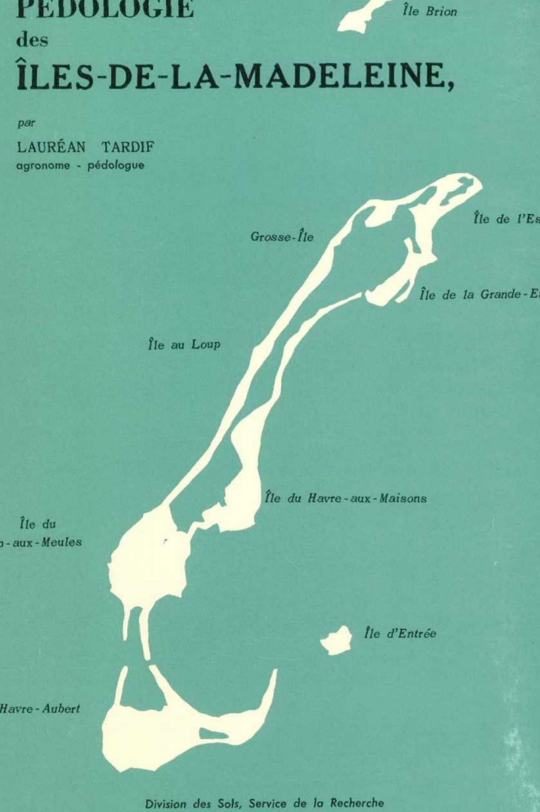
Île Brion
Grosse-Île
Île de l'Est
Île de la Grande-Entrée
Île au Loup
Île du Havre-aux-Maisons
Île du Cap-aux-Meules
Île d'Entrée
Île du Havre-Aubert
Division des Sols, Service de la Recherche
Ministère de l'Agriculture et de la Colonisation, Québec, 1967.
AVANT-PROPOS
La publication du bulletin technique numéro 13, « Pédologie des Îles-de-la-Madeleine », a été rendue possible grâce à la collaboration du gouvernement du Québec et de celui du Canada. En effet, tous les frais occasionnés par l'étude sur le terrain ont été remboursés au Québec par la direction de l'Inventaire des terres du Canada.
Lors de la prospection pédologique des Îles-de-la-Madeleine, en vue de l'élaboration de la carte (11 N) des possibilités agricoles des sols, toutes les données pertinentes à cette fin furent recueillies par le pédologue.
La carte (11 N) des possibilités agricoles des sols des Îles-de-la-Madeleine, suivant le système canadien à l'échelle 1:250,000, est disponible.
L'auteur désire exprimer sa gratitude à la direction du ministère de l'Agriculture et de la Colonisation qui a facilité la publication de ce rapport. Il remercie de leur collaboration les agronomes-pédologues et le personnel de la division des Sols ainsi que monsieur Zénon Bergeron qui a aidé à la prospection et à la cartographie.
LES SOLS DES ÎLES-DE-LA-MADELEINE . . . . . . . . . . 17
LÉGENDE DES SOLS . . . . . . . . . . . . . . . 18
DESCRIPTION DES SÉRIES :
Anse-à-la-Cabane . . . . . . . . . . . . . . . 20
Lavernière . . . . . . . . . . . . . . . 21
Aurigny . . . . . . . . . . . . . . . 23
Madelinot . . . . . . . . . . . . . . . 24
Vigneault
Le Bassin
Brion
Grosse Île
Les Demoiselles
Pointe-Basse
Havre-aux-Maisons
Fatima
Coffin
Gros-Cap
Étang du Nord
Corfu
Boisville
Solomon
Belle-Anse
Grand-Ruisseau
Île d'Entrée
Millerand
Havre-Aubert
SOLS ORGANIQUES
Tourbes à sphaigne
Terrains marécageux
Terres noires
ANNEXE I : Méthodes analytiques
ANNEXE II : Données planimétriques des Îles-de-la-Madeleine
ANNEXE III : Données planimétriques tirées de la carte des possibilités d'utilisation agricole des Îles-de-la-Madeleine
BIBLIOGRAPHIE
PÉDOLOGIE
des
ÎLES-DE-LA-MADELEINE
par
LAURÉAN TARDIF
agronome-pédologue
Bulletin technique No 13
Division des Sols, Service de la Recherche
Ministère de l'Agriculture et de la Colonisation du Québec
INTRODUCTION
"L'homme s'est depuis toujours penché sur le sol qu'il cultive et duquel il tire sa subsistance. En effet, aussi loin qu'il nous soit permis de remonter dans l'histoire, nous trouvons des écrits d'auteurs anciens tels que Virgile, Columelle, Pline, où il est question d'agriculture et de technique présupposant des rudiments de pédologie pratique. Mais ce n'était là que le fruit de simples observations, la véritable science ne devant voir le jour que plusieurs siècles plus tard" (12).
La classification des sols au Québec est due à l'initiative des agronomes-pédologues et se poursuit grâce au soutien financier du ministère de l'Agriculture et de la Colonisation.
Le présent rapport est la compilation et l'analyse des données recueillies au cours de l'étude pédologique des Îles-de-la-Madeleine basés sur le système canadien de classification des sols (7, 11).
Tout n'est pas dit au sujet des sols des Îles-de-la-Madeleine car ce rapport est en quelque sorte conditionné par le système utilisé. Ceux qui voudraient connaître la valeur agricole de ce territoire devront consulter les cartes des possibilités d'utilisation des sols des Îles-de-la-Madeleine (13) dressées par l'auteur en conformité avec les critères du système québécois de "classement des sols selon leurs possibilités d'utilisation agricole" (6).
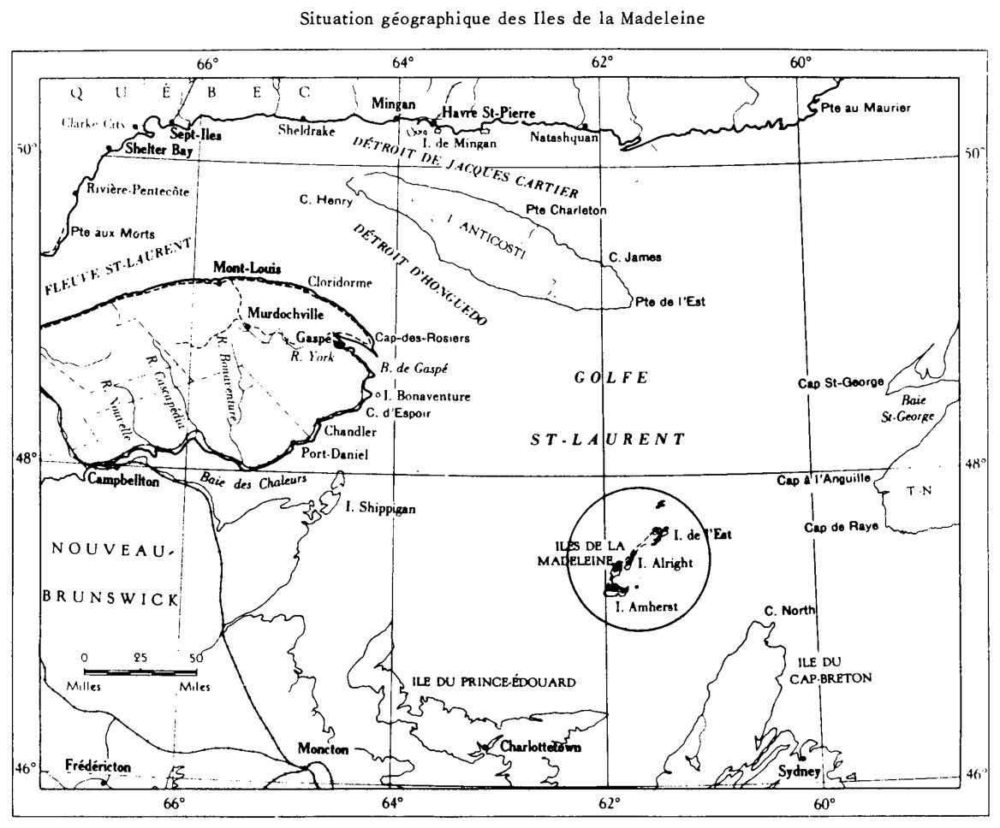
Situation géographique des Iles de la Madeleine
PREMIÈRE PARTIE
Milieu naturel
Situation géographique
Les Îles-de-la-Madeleine sont situées en plein golfe Saint-Laurent à quelque 160 milles au sud-est de Gaspé, à 65 milles au nord-est de l'Île-du-Prince-Édouard et à 90 milles sud-ouest de Port-aux-Basques, Terre Neuve. L'archipel madelinien a une orientation sud-ouest nord-est entre les longitudes ouest 61°8′ et 62°13′ et les latitudes nord 47°12′ et 47°51′.
Superficie
La superficie totale est de 78 milles carrés. L'île sableuse dénommée Île de l'Est et les dunes reliant les îles entre elles couvrent une superficie de 25 milles carrés (13).
Population
La population est d'environ 12,500 Madelinots pour la plupart de descendance acadienne. Ils vivent surtout de la mer (illustration I).
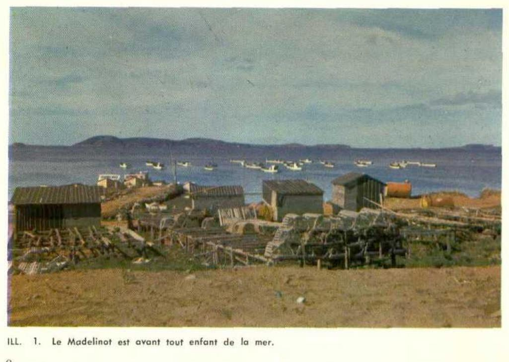
ILL. 1. — Le Madelinot est avant tout enfant de la mer.
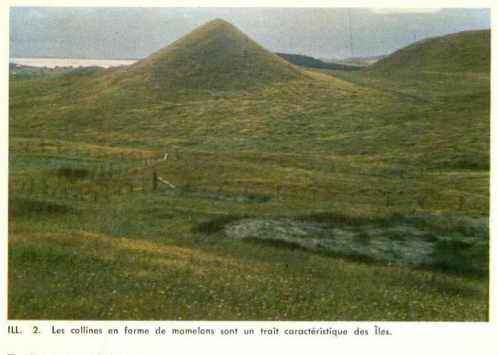
ILL. 2. Les collines en forme de mamelons sont un trait caractéristique des Îles.
Traits caractéristiques
Les Îles-de-la-Madeleine possèdent des traits caractéristiques à toute île. Il en est ainsi des moeurs et des traditions que ses habitants ont maintenues (5). Néanmoins, l'archipel madelinien a des caractéristiques propres : sa forme épouse grossièrement celle d'un hameçon; ses collines aux pentes raides dont le plus haut sommet s'élève à quelque 550 pieds, sont en forme de mamelons, (illustration 2), ce qui a valu leur nom à certaines d'entre elles, "Les Demoiselles", "Les Jumelles"; ses falaises rouges sculptées avec fantaisie par la mer frappe l'oeil du visiteur (illustrations 3, 4); les tombolos finis plages au sable blanc que la mer se plaît à carresser constituent des traits caractéristiques particuliers des Îles-de-la-Madeleine (illustration 5).
Géologie générale
Le plus loin qu'il soit permis de remonter dans l'histoire géologique des Îles (1) serait à l'époque mississipienne au cours de laquelle des matériaux se sont déposés en lits formés de calcaire et de gypse. Cette période de sédimentation aurait été interrompue par des éruptions volcaniques successives alors que des bombes et les cendres projetées dans les airs allaient retomber plus loin pour sédimenter au fond de la mer. L'épaisseur des dépôts volcaniques varie avec la distance de la cheminée d'où ils furent lancés.
Ceci s'est produit probablement à l'époque où les Îles étaient submergées ou encore n'émergeaient que très peu. Cependant, rien ne nous permet d'établir l'âge du matériel volcanique.
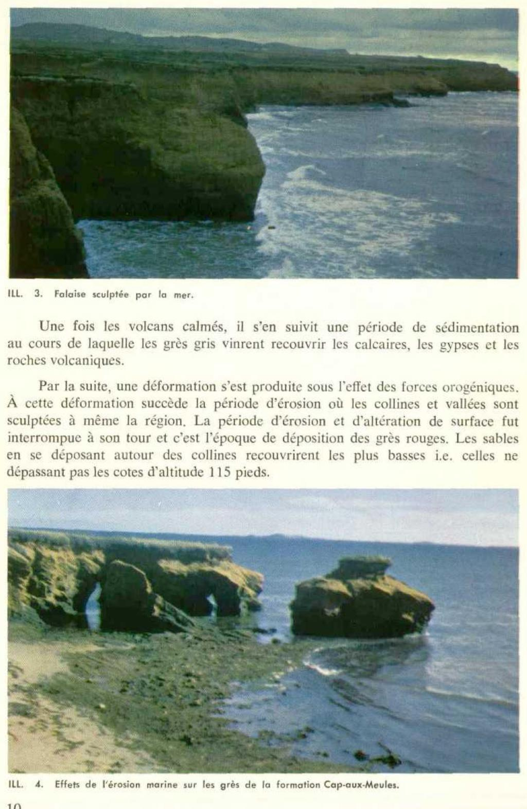
ILL. 3. Falaise sculptée par la mer.
Une fois les volcans calmés, il s'en suivit une période de sédimentation au cours de laquelle les grès gris vinrent recouvrir les calcaires, les gypses et les roches volcaniques.
Par la suite, une déformation s'est produite sous l'effet des forces orogéniques. À cette déformation succède la période d'érosion où les collines et vallées sont sculptées à même la région. La période d'érosion et d'altération de surface fut interrompue à son tour et c'est l'époque de déposition des grès rouges. Les sables en se déposant autour des collines recouvrirent les plus basses i.e. celles ne dépassant pas les cotes d'altitude 115 pieds.
ILL. 4. Effets de l'érosion marine sur les grès de la formation Cap-aux-Meules.
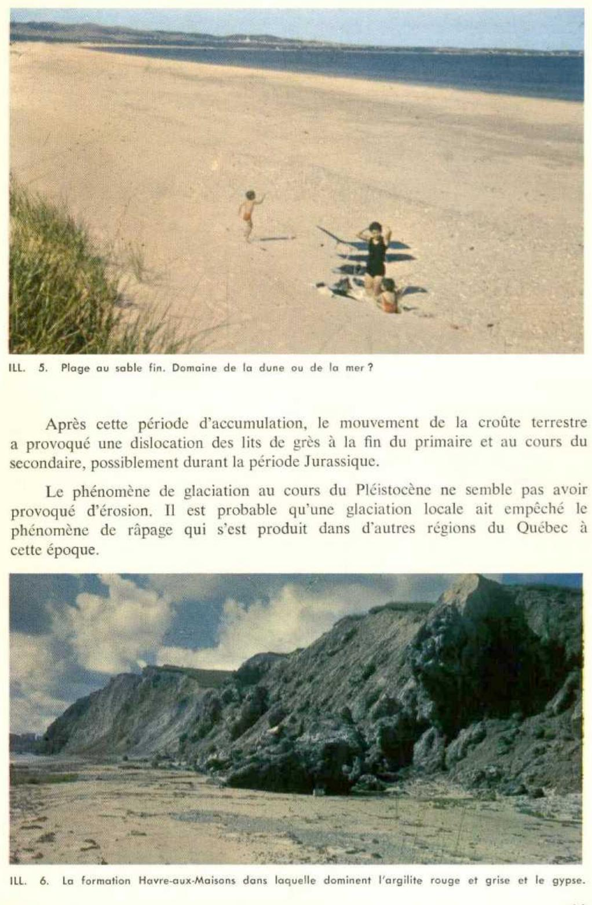
ILL. 5. Plage au sable fin. Domaine de la dune ou de la mer ?
Après cette période d'accumulation, le mouvement de la croûte terrestre a provoqué une dislocation des lits de grès à la fin du primaire et au cours du secondaire, probablement durant la période Jurassique.
Le phénomène de glaciation au cours du Pléistocène ne semble pas avoir provoqué d'érosion. Il est probable qu'une glaciation locale ait empêché le phénomène de râpage qui s'est produit dans d'autres régions du Québec à cette époque.
ILL. 6. La formation Havre-aux-Maisons dans laquelle dominent l'argilite rouge et grise et le gypse.
Au tertiaire et même au début du Pléistocène, les Îles-de-la-Madeleine s’étendaient de l’Île-du-Prince-Édouard aux bancs de Terre-Neuve.
Le fait qu’aujourd’hui les Îles sont détachées du continent, est attribuable à la dépression qu’a subi l’est du Canada sous le poids des glaces accumulées au cours du Pléistocène. C’est ainsi du reste qu’on explique le caractère d’enfoncement du littoral de la Nouvelle-Écosse. Avec la fonte des glaciers le relèvement de la croûte terrestre se fait d’un façon différentielle : nulle en Nouvelle-Écosse, il atteint 600 pieds dans la région de Québec.
La période récente est marquée par le développement des tourbières et des cordons de sable ou dunes formées aux dépens des matériaux dérivés des grès tendres arrachés à la falaise. Ceci cause le retrait relativement rapide des falaises. Ainsi les formations géologiques actuelles dans un avenir géologique pas très éloigné pourraient céder la place à une île sableuse du genre de l’Île-au-Sable située au large des côtes de la Nouvelle-Écosse.
Les formations géologiques
On trouve aux Îles des roches volcaniques et des roches sédimentaires. Sanschagrin (9) a caractérisé deux formations bien distinctes : la formation Cap-aux-Meules constituée de grès rouge et gris-vert, et la formation Havre-aux-Maisons comprenant le membre du Bassin-aux-Huîtres et le membre du Cap Adèle.
Les grès rouges et gris-vert non fossilifères ont été comparés au groupe de Canso (W.A. Bell, 1946), à la formation de Bonaventure (F. J. Alcook, 1941) et aux grès rouges de l’Île-du-Prince-Édouard (J. M. Clark, 1910). Sanschagrin (9) en fait une formation distincte qu’il baptise la formation Cap-aux-Meules de la période permo-carbonifère.
La formation Havre-aux-Maisons appartient au groupe Windsor de la période mississipienne. Le membre du Bassin-au-Huîtres est constitué de roches sédimentaires telles que : calcaire et schiste calcaireux fossilifères, argilite rouge et grise et gypse (illustration 6). Le membre Cap Adèle également du groupe Windsor est composé surtout de roches volcaniques, coulées de laves, basalte bréchique, d’agglomérats et de tufs tous deux interstratifiés de congrès, de grès, de siltstones, de calcaires et de schistes calcaireux souvent fossilifères, et des argilites rouges et gris-vert dépourvues de fossiles. Ce membre contient aussi du gypse en lits plus ou moins réguliers.
Les roches volcaniques sont très altérées et les coulées de laves sont caractérisées par une texture bréchoïde. Aussi la pelle mécanique réussit à extraire du flanc des buttes, sur une profondeur de 100 pieds, un matériel anguleux utilisé tel quel sur les routes.
“Ce complexe de roches volcaniques est à l’origine des noyaux centraux des îles : Havre-aux-Maisons, Cap-aux-Meules, Havre-Aubert et de l’Entrée” (9).
Ce matériel couvre une superficie de 17,200 acres dont 4,800 acres forment l'Île de l'Est. Il reste 12,400 acres qui s'étendent en deux bandes plus ou moins parallèles à 3 milles de distance sur une longueur de 40 milles en direction sud-ouest nord-est depuis l'Île du Havre-Aubert jusqu'à Grosse Île et Île Coffin et forment les dunes qui avec l'Île de l'Est représentent 25% de la superficie totale du territoire de 50,000 acres ou 78 milles carrés. L'altitude est généralement inférieure à 30 pieds, mais en un endroit maximum elle atteint 125 pieds. D'une largeur de quelques centaines de pieds, elles atteignent 8,500 pieds à l'est de Havre-aux-Maisons.
ILL. 8. — L'Elyme des sables et le Gourbet tendent à fixer les dépôts éoliens.ILL. 9. — Les sols développés sur grès rouge de la formation Cap-aux-Meules présentent une topographie plane ou légèrement ondulée.
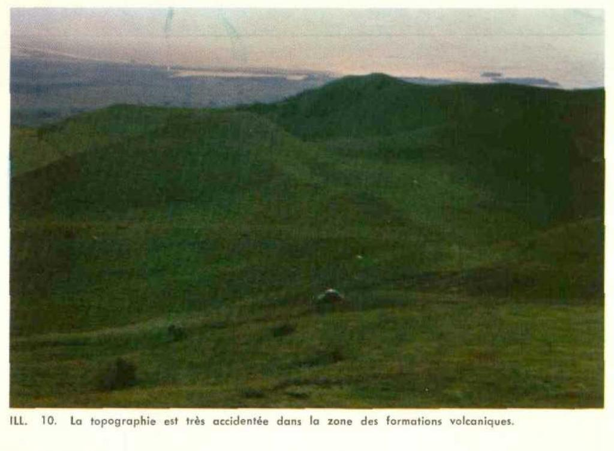
ILL. 10. La topographie est très accidentée dans la zone des formations volcaniques.
Topographie
En général, les superficies sur les grès rouges présentent une topographie plane à légèrement ondulée (illustration 9), tandis que le noyau central des îles, où les formations volcaniques sont en complexes avec les formations sédimentaires (argilite et gypse), présente une topographie très accidentée (illustration 10).
Climatologie
En plein golfe Saint-Laurent, entre les latitudes nord 47°12" et 47°51", le climat aux Îles-de-la-Madeleine est froid et humide. La température est lente à se réchauffer au printemps ce qui retarde le départ de la végétation. Les glaces flottantes entraînées par les courants marins venant du Labrador empruntent le détroit de Belle-Isle et séjournent un certain temps à l'ouest de Terre-Neuve. Elles se dirigent ensuite vers l'est par le détroit de Cabot, entre l'Archipel et Terre-Neuve, pour enfin disparaître dans des eaux plus chaudes au sud-est des Îles. Ces courants, quoique bénéfiques aux Madelinots en mars du fait qu'ils transportent les banquises chargées de loups-marins, n'en sont pas moins pour autant des inconvénients en mai et juin puisqu'ils maintiennent la température plutôt froide. En 1964, le lilas était en pleine floraison le 10 juillet tandis qu'au coeur de Québec il avait atteint ce stade la deuxième quinzaine de mai.
Un épais brouillard flotte occasionnellement sur les Îles au début de l'été. Avec sa disparition le mercure monte de plusieurs degrés. Aussi la végétation semble rattraper en juillet un certain retard qu'elle avait accumulé jusque là.
Grâce à la répartition des pluies et la forte condensation qui se produit durant la nuit, les dangers de sécheresse sont pratiquement inexistant aux Îles. Le jour, une légère brise souffle presque continuellement.
“Le climat des Îles est maritime. La saison sans gel est l'une des plus longues du Québec. Pour une période d'observation de 39 ans, à Cap-aux-Meules, la période sans gel fut de 161 jours en moyenne, avec des extrêmes de 140 jours et de 187 jours. En conséquence, les gelées hâtives et tardives ne sont pas à craindre, ni les périodes très chaudes, car la moyenne mensuelle la plus élevée est de 62°F, en juillet” (3).
Végétation
Il est très difficile et il serait même téméraire de vouloir établir une relation étroite et continue entre la végétation et le degré d'évolution des sols des Îles-de-la-Madeleine.
Les peuplements de feuillus sont complètement absents. Les conifères composent la végétation forestière dans laquelle il y a prédominance de sapin baumier là où il ne constitue pas la seule essence forestière.
Quelques colonies d'épinettes noires sont bien localisées. Elles se retrouvent sur les sols sableux à nappe phréatique élevée d'une façon permanente ou saisonnière, dû à la position des sols en dépression ou encore à un horizon induré imperméable.
À la suite de ses observations, l'auteur peut affirmer que le climat n'est pas favorable à la croissance des feuillus ou à une végétation forestière à feuilles caduques. En effet, l'air salin et les vents qui viennent du large, quelle que soit la direction dans laquelle ils soufflent, sont des raisons pour lesquelles on ne retrouve le bouleau et l'érable que sous des types de végétation mixte et dans des endroits protégés des vents.
Rousseau et Grandtner ont observé des sols ayant les caractéristiques de sols bruns et portant une végétation de conifères alors qu'ordinairement l'érablière à bouleau jaune croît sur ces groupes de sols.
Les dunes sont vite colonisées d'une graminée stolonigère, l'Élyme des sables ou Seigle de mer (Elymor arenarius, L.) (illustration 8). Les sols résiduels provenant de la formation Cap-aux-Meules sont souvent couverts d'un tapis de camarine noire (Empetrum nigrum) (illustration 13). L'atocas, le bleuet (airelle) et le kalmia sont communs aux Îles.
Grandtner (4) reconnaît cinq types de végétation aux Îles :
la végétation maritime et des sols salées;
la sapinière à épinette blanche;
la pessière à kalmia;
la pessière à sphaigne;
l'aulnaie.
Les îles se partagent deux types principaux de végétation, la sapinière à épinette blanche et la végétation maritime avec, intercalée entre les deux, les peuplement d'épinette noire. Il n'y a point d'érablière, ni de forêts de pin et encore moins de cédrière sèche des pentes calcaires.
DEUXIÈME PARTIE
Les sols des Îles-de-la-Madeleine
Les sols dérivés de grès rouges sont sableux, très acides et fortement podzolisés. Ce sont des podzols humiques et à ortstein (illustration 11). À une altitude supérieure à 60 pieds un matériel glacio-marin constitué de limon sablo-graveleux reposant sur grès rouge présente les caractères morphogénétiques de podzol orthique.
ILL. 11. Les sols dérivés de grès rouge évoluent vers les podzols humiques à horizon cimentée Bfc.
Les sols plus argileux, quoique légèrement acides en surface, proviennent de matériaux calcaires. Aussi ils se regroupent parmi les podzols minimaux, les gris boisés, les brun boisés et les régosols à tendance brunisolique (7).
Les sables de dunes sont classés dans les régosols orthiques et portent une végétation d'Élyme des sables. À certains endroits, tout spécialement à l'Île de l'Est, les sables blancs fixés par une végétation d'atocas et d'épinettes noires sont surmontés de minces horizons L-H et Ah que les forestiers (8) classent dans les « rankers » (illustration 12).
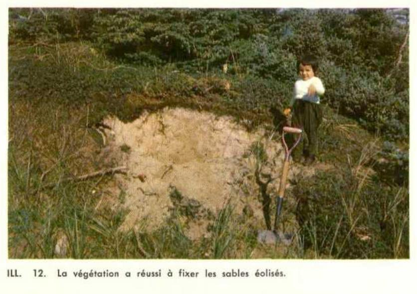
ILL. 12. La végétation a réussi à fixer les sables éolisés.
Légende des Sols
(Classification d'après le système canadien) (6)
SOUS-GROUPE
SYMBOLE
3.51 Podzol orthique développé aux dépens de :
a) matériau résiduel :
Série Anse-à-la-Cabane
b) matériau glacio-marin :
Série Lavernière
c) sur till :
Série Madelinot
Série Aurigny
Série Vigneault
Série Le Bassin
C
L
M
Ag
V
B
SOUS-GROUPE
SYMBOLE
3.51/3.41Podzol orthique à tendance humique développé aux dépens de matériau résiduel :
Série Brion
Br
Série Grosse-Île
Gi
3.51/5.11Podzol orthique érodé issu de till local :
Série Les Demoiselles
D
3.52Podzol minimal issu d'alluvions et colluvions :
Série Pointe Basse
P
3.52/4.32Podzol minimal à brun boisé acide dégradé développé sur till argileux :
Série Havre-aux-Maisons
Ma
3.53Podzol à ortstein sur matériau résiduel :
Série Fatima
F
3.53/3.41Podzol à ortstein humifié sur matériau résiduel :
Série Coffin
Cf
Série Gros-Cap
G
3.54/8Podzol concrétionné gleyifié sur matériau alluvionnaire :
Série Étang du Nord
E
Série Corfu
K
Série Corfu avec revêtement éolien
Kc
4.32Brun boisé acide dégradé développé sur till :
Série Boisville
Bf
Série Solomon
S
5.11Régosol orthique développé aux dépens :
a) d'alluvion :
Série Belle-Anse
Ba
b) de till argileux :
Série Grand-Ruisseau
R
c) sols résiduels et affleurements :
Série Île d'Entrée
En
6.22Gleysol orthique sur alluvion :
Série Millerand
Mi
Série Havre-Aubert
Ha
Sols organiques
7.1Oligotrophes
Tourbes à sphaigne
T
Terrains marécageux
🪷
7.2Eutrophes
Terres noires
O
Description des Séries
Le lecteur trouvera dans le présent chapitre une description des différents profils et quelques observations de l'auteur sur les caractères morphologiques et sur les résultats analytiques qui permettent de porter un jugement quant à la valeur agricole des sols.
Cette série est presqu'entièrement localisée à l'endroit du même nom dans l'Île du Havre-Aubert. On la retrouve en complexe avec la série Le Bassin dans l'Île d'Entrée.
Profil (illustration 14)
Horizons
Profondeur en pouces
Description
Aa
0 - 2
Loam limoneux à loam sableux fin brun (7.5YR 5/4); faiblement grumeleux; friable; perméable; fortement acide (a).
Ae
traces
Limon gris rose (7.5YR 6/2); particulaire; friable.
Loam sableux fin à sable loameux rouge (2.5YR 4/6); particulaire; friable; perméable; fortement acide.
(a) La nomenclature concernant la réaction des sols correspond à celle employée par Baril (2).
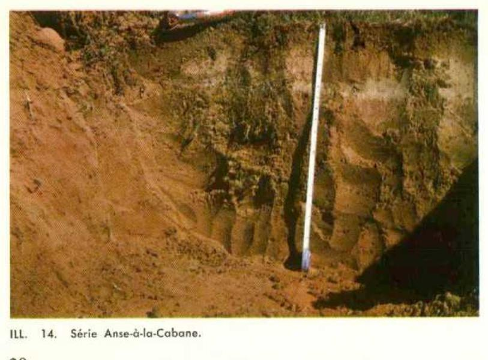
ILL. 14. Série Anse-à-la-Cabane.
Ae 5 - 7.5 Loam sableux fin gris rose (7.5YR 7/2), gris clair à sec (5YR 7/1); particulaire; friable; perméable; très fortement acide.
Bf1 7.5 - 11 Loam sableux, gravelo-caillouteux; brun vif (7.5YR 5/6) à rouge jaune (5YR 4/8); structure en agrégats fins; friable; perméable; fortement à très fortement acide.
Bf2 11 - 18 Loam sablo-graveleux rouge jaune (5YR 4/8); particulaire; friable; perméable; fortement à très fortement acide.
CR 18 Sable fin, grès décalcifié et désagrégé rouge (2.5YR 4/6), rouge clair à sec (2.5YR 6/6); structure particulaire, friable, perméabilité réduite; offre trop peu de résistance à la pelle; fortement à très fortement acide.
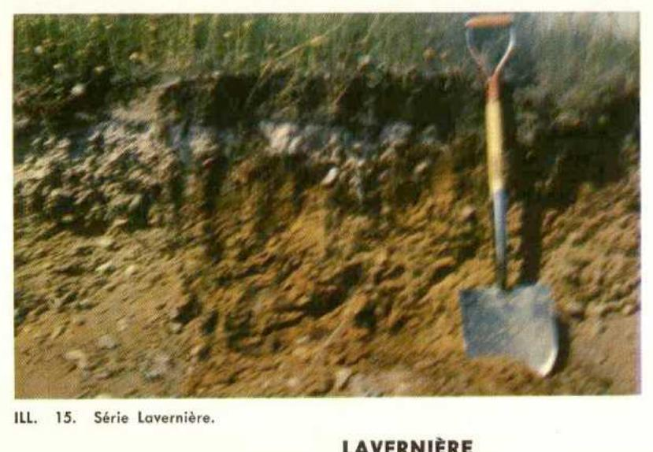
ILL. 15. Série Lavernière.
LAVERNIÈRE
Résultats analytiques
Horizons
Profondeur en pouces
Sable %
Limon %
Argile %
pH
C %
N %
Cations échangeables M.E./100g
Bases totales
C.E.
Saturaton %
Ca
Mg
K
H+
L-H
2-0
4.3
9.84
0.36
5.1
3.0
0.6
18.0
8.7
26.7
32.5
Aa
0-5
54.6
33.8
11.6
4.8
7.52
0.34
3.4
8.3
0.3
18.0
12.0
30.0
40.0
Ae
5-7.5
56.6
33.8
9.6
4.9
1.67
0.06
0.7
1.2
0.1
10.0
2.0
12.0
16.6
Bf
7.5-18
62.6
25.8
11.6
4.9
3.17
0.16
0.5
0.9
0.1
21.0
1.5
22.5
6.6
CR
18
93.3
2.9
3.8
5.0
0.33
0.05
0.7
1.6
0.1
4.0
2.4
6.4
37.5
Utilisation agricole
Les sols de la série Lavernière, loam sablo-graveleux, à structure particulaire ou faiblement grumeleuse, sont assez bien pourvus en matière organique mais pauvres en éléments fertilisants. Quoique très perméables, ils ne semblent pas sujets à la sécheresse sans doute à cause du climat maritime de la région.
à une topographie plane à légèrement ondulée, ils se prêtent à la plupart des cultures acidophiles. Le pH et le niveau de la fertilité pris en considération, ils réclament de fortes doses de fertilisants et d'amendements calcaires si on désire des productions à haut rendement.
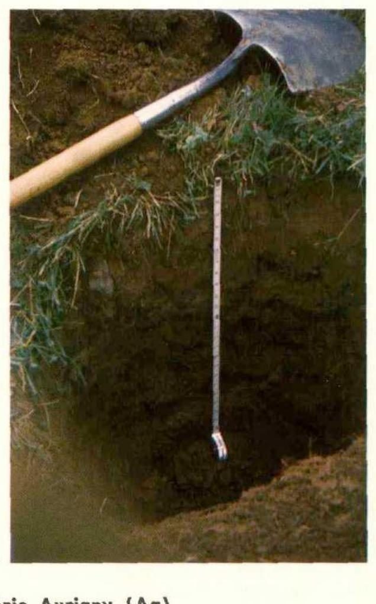
ILL. 16. Série Aurigny.
Série Aurigny (Ag)
Sous-groupe : podzol orthique
Dépôt : till
Topographie : accidentée et ondulée
Drainage : bon
Les sols de cette série ont une texture de loam en surface sur loam-argileux à argile sableuse en profondeur. Quoique plus évoluée, ils s'apparentent aux sols de la série Solomon au voisinage desquels ils sont localisés. Ils portent du reste
une végétation identique à celle observée sur cette dernière série et présentent une topographie en pente plus régulière et moins accidentée. Contrairement à ceux de la série Solomon, les sols de la série Aurigny portent quelques cailloux dans le profil.
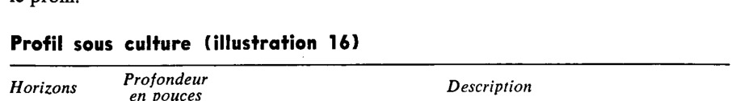
Profil sous culture (illustration 16)
Horizons
Profondeur en pouces
Description
Aa
0 - 9
Loam; grumeleux; friable; perméable; brun rouge foncé (5YR 3/4), brun rouge clair à sec (5YR 6/3); très fortement acide.
Ae
9 - 11
Loam; particulaire; meuble; friable; perméable; rouge faible (2.5YR 5/2), rose à sec (5YR 7/3); très fortement acide.
Bf
11 - 21
Loam; structure en agrégats fins; friable; perméable; rouge jaune (5YR 5/8), brun rouge clair à sec (5YR 6/4); fortement à très fortement acide.
C
21
Loam argileux à argile sableuse; friable; perméabilité réduite; rouge foncé (10YR 3/6), brun rouge clair à sec (5YR 6/4); fortement à moyennement acide, sur matériau calcaire en profondeur.
AURIGNY
Résultats analytiques
Horizons
Profondeur en pouces
Sable %
Limon %
Argile %
pH
C %
N %
Cations échangeables M.E./100g
Bases totales
C.E.
Saturation %
Ca
Mg
K
H+
Aa
0 - 9
35.6
38.0
26.4
4.7
4.15
0.30
3.4
4.6
0.2
12.0
8.2
20.2
40.5
Bf
11 - 21
33.6
34.0
32.4
4.6
3.09
0.21
2.7
4.8
0.1
16.5
7.6
24.1
31.5
C
21
43.6
30.0
26.4
5.1
0.89
0.07
1.1
1.8
0.1
9.0
3.0
12.0
25.0
Utilisation agricole
Les sols loameux à structure grumeleuse de la série Aurigny conviennent très bien à une gamme de culture tant maraîchère que de grande culture. Cependant, dans les pentes on doit les réserver à la grande culture et aux pâturages. La plupart des plantes trouveraient avantage à l'application de chaux. Le drainage interne est excellent.
Série Madelinot (M)
Sous-groupe : podzol orthique
Mode de dépôt : till local
Topographie : accidentée à fortement accidentée
Drainage : bon
Profil (cultivé). (illustration 17)
Horizons
Profondeur en pouces
Description
Aa
0 - 5
Loam à cailloux anguleux brun foncé (7.5YR 4/2); particulaire à faiblement grumeleux; friable; perméable; très fortement acide.
Ae
5 - 9
Limon sableux fin caillouteux gris rose (7.5YR 6/2); particulaire; friable; très fortement acide.
Bf
9 - 18
Limon pierreux rouge jaune (5YR 4/6); particulaire ; friable; perméable; fortement à très fortement acide.
CR
18
Limon très pierreux à roc cassé permettant l'infiltration de l'eau et des racines; brun rouge foncé (5YR 3/4); fortement acide.
ILL. 17. Série Madelinot
MADELINOT
Résultats analytiques
Horizons
Profondeur en pouces
Sable %
Limon %
Argile %
pH
C %
N %
Cations échangeables M.E./100g
Bases totales
C.E.
Saturation %
Ca
Mg
K
H+
Aa
0 - 5
54.6
37.8
7.6
4.8
5.76
0.34
2.4
2.4
0.2
14.0
5.0
19.0
26.3
Ae
5 - 9
54.6
37.8
7.6
4.7
2.25
0.11
0.7
1.0
0.1
8.0
1.8
9.8
18.3
Bf
9 - 18
58.6
31.8
9.6
4.8
1.92
0.09
1.3
0.4
0.1
14.0
2.8
16.8
16.6
CR
18
73.3
18.9
7.8
5.4
0.72
0.03
1.3
2.5
0.2
6.0
4.0
10.0
40.0
Série Vigneault (V)
Sous-groupe : podzol orthique
Dépôt : till
Topographie : ondulée à faiblement accidentée
Drainage : bon à imparfait.
Les sols de la série Vigneault sont développés sur matériaux identiques à ceux de la série Lavernière. Ils sont localisés à l'endroit du même nom dans l'île du Havre-Aubert.
Horizons
Profondeur en pouces
Description
Aa
0 - 5
Loam sableux brun foncé; particulaire à faiblement grumeleux; friable; fortement à très fortement acide.
Ae
5 - 8
Sable fin gris rose; particulaire; très fortement acide.
Certains rapprochements pourraient être faits, quoique plus légers en surface, avec les sols des séries Solomon et Aurigny au voisinage desquels la série Le Bassin a été identifiée.
Profil (illustration 18)
Horizons
Profondeur en pouces
Description
Aa
0 - 8
Loam à loam sableux brun foncé; structure grumeleuse; friable et perméable; fortement à moyennement acide.
Ae
traces
Loam gris rose.
Bf
8 - 18
Loam sableux fin rouge jaune; particulaire; friable et perméable; fortement à moyennement acide.
C
18+
Loam sablo-argileux à argilo-sableux rouge; se cimente et fendille en séchant; moyennement acide.
LE BASSIN
Résultats analytiques
Horizons
Profondeur en pouces
Sable %
Limon %
Argile %
pH
C %
N %
Cations échangeables M.E./100g
Bases totales
C.E.
Saturation %
Ca
Mg
K
H+
Aa
0 - 8
58.6
25.8
15.6
5.0
2.76
0.19
4.4
3.6
0.3
10.0
8.3
18.3
45.3
Bf1
8 - 12
58.6
25.8
15.6
5.1
2.39
0.17
3.4
3.0
0.1
10.0
6.5
16.5
39.3
Bf2
12 - 18
66.6
21.8
11.6
5.5
0.89
0.04
1.6
1.5
0.1
6.0
3.2
9.2
34.7
C1
18 - 24
76.6
13.8
9.6
5.6
0.36
0.02
1.4
1.6
0.2
5.0
3.2
8.2
39.0
C2
24+
62.6
19.8
17.6
5.2
0.01
0.03
1.9
5.7
0.2
4.0
7.8
11.8
66.1
Série Brion (Br)
Sous-groupe : podzol orthique évoluant vers le podzol humique 3.51/3.41
Dépôt : résiduel
Topographie : plane à légèrement en pente
Drainage : bon
Les sols de la série Brion se différencient de ceux de la série Coffin du fait qu'ils comportent un horizon Bhf non cimenté et moins prononcé. L'horizon C est comparable de l'un à l'autre. Il est constitué de sable gréseux compact et friable provenant de la désagrégation de la formation Cap-aux-Meules sous-jacente.
Horizons
Profondeur en pouces
Description
L-H (Ah)
0 - 4
Matière organique mésotrophe noire composée de résidus de conifères; extrêmement acide.
Ae
4 - 10
Sable fin friable gris blanc à gris foncé; extrêmement acide.
Bhf
10 - 16
Sable fin limoneux noir; friable et perméable; très fortement acide.
CR
16+
Grès décalcifié, sable fin rouge (2.5YR 4/6); compact; friable après déplacement; fortement à très fortement acide.
Valeur agricole
Les sols de cette série se comparent avantageusement à ceux de la série Lavernière.
Sable fin brun clair (7.5YR 6/4); particulaire; très fortement acide.
CR
17+
Roc décalcifié. Sable fin compact; brun gris verdâtre à olive jaune; très fortement acide.
Le symbole Gh sur la carte indique la série Grosse-Île comportant un horizon Bfhc.
GROSSE ÎLE
Résultats analytiques
Horizons
Profondeur en pouces
Sable %
Limon %
Argile %
pH
C %
N %
Cations échangeables M.E./100g
Bases totales
C.E.
Saturation %
Ca
Mg
K
H+
Ah
0 - 3
62.6
29.8
7.6
3.9
6.18
0.26
2.1
1.9
0.3
12.0
4.3
16.3
26.3
Ae1
3 - 6
68.6
23.8
7.6
4.3
0.81
0.04
0.5
0.6
0.1
4.0
1.2
5.2
23.0
Ae2
6 - 9
68.6
19.8
11.6
4.0
0.75
0.04
0.5
1.0
0.2
13.0
1.7
14.7
11.5
Bfh
9 - 13
70.6
19.8
9.6
4.1
2.09
0.11
0.4
0.8
0.2
28.0
1.4
29.4
4.7
CR
17+
87.3
9.9
2.8
4.7
0.19
0.03
0.3
0.6
0.1
10.0
1.0
11.0
9.0
Série Les Demoiselles (D)
Sous-groupe : podzol orthique érodé à régosol
Mode de dépôt : till local
Topographie : complexe fortement accidenté
Drainage : bon à excessif
La série Les Demoiselles forme avec la série Madelinot un complexe qui représente un type de terrain à topographie accidentée ou très fortement accidentée. Il est impossible de décrire le profil modal puisqu'on a donné une telle extension à la série qu'elle va du podzol orthique au régosol causé par l'érosion.
Loam sableux rouge (2.5YR 4/6) avec pochettes plus limoneuses et courants brun rouge foncé (5.0YR 4/3); particulaire; friable et perméable; fortement acide.
C
15+
Loam limono-sableux rouge (2.5YR 4/6); particulaire et onctueux; fortement acide.
Série Havre-aux-Maisons (Ma)
Sous-groupe : podzol minimal à brun boisé acide dégradé 3.52/4.32
Dépôt : till
Topographie : ondulée.
Drainage : bon
La série Havre-aux-Maisons s'est développée aux dépens d'un matériau originel argileux calcaire qui a ralenti le processus de la podzolisation. Au niveau de l'horizon C les sols ont beaucoup d'affinité avec ceux de la série Grand-Ruisseau en complexe avec laquelle ils sont cartographiés. Ils sont surtout localisés à l'Île d'Havre-aux-Maisons et à Grand-Ruisseau dans l'Île du Cap-aux-Meules. La grande majorité est en culture. À l'état vierge, ils portent une végétation mixte où le sapin domine, et sont surmontés d'humus de type mor ou oligotrophe i.e. acide et peu décomposé.
Profil (illustration 19)
Horizons
Profondeur en pouces
Description
Aa
0 - 7
Loam brun foncé (10YR 4/3); brun pâle à sec (10YR 6/3); grumeleux; friable et perméable; très fortement acide.
L-H
0 - 4
Matière organique mésotrophe, noir à sec (5YR 2/1); extrêmement acide.
Aej
4 - 7
Loam rose (5YR 7/3); en agrégats fins; friable; perméable; très fortement acide.
Bf
7 - 12
Loam brun rouge (5YR 4/4); en agrégats fins; friable; perméable; très fortement acide.
C
12
Argile rouge foncé (10R 3/6) avec de grandes taches gris rouge (10R 5/1) et blanc; particulaire; massive; perméabilité lente; fortement à moyennement acide; réaction neutre à 30 pouces.
HAVRE-AUX-MAISONS
Résultats analytiques
Horizons
Profondeur en pouces
Sable %
Limon %
Argile %
pH
C %
N %
Cations échangeables M.E./100g
Bases totales
C.E.
Saturation %
Ca
Mg
K
H+
L-H
0 - 4
3.8
26.31
0.87
1.8
4.7
1.0
72.0
7.5
79.5
9.4
Aej
4 - 7
41.6
32.0
26.4
4.5
2.87
0.17
1.0
2.5
0.1
12.0
3.6
15.6
23.0
Bf
7 - 12
51.6
24.0
24.4
4.8
1.14
0.08
0.8
1.5
0.1
6.0
2.4
8.4
22.5
C
12
23.6
32.0
44.4
5.2
0.61
0.06
2.0
3.8
0.1
4.0
5.9
9.9
59.5
ILL. 19. Série Havre-aux-Maisons
Utilisation agricole
Les sols de la série Hâvre-aux-Maisons se prêtent à un grand nombre de cultures. La capacité de rétention et le pourcentage de saturation contribuent à leur conférer un haut pouvoir de production. Cependant, à certains endroits, la topographie complexe indique de les réserver à la grande culture.
Série Fatima (F)
Sous-groupe : podzol à ortstein
Matériau : résiduel
Topographie : plane (0-2)
Drainage : bon
Les sols de la série Fatima s'apparentent à ceux de la série Lavernière en association avec lesquels ils sont cartographiés. Ils se différencient cependant par leur horizon B cimenté et se rencontrent tantôt sur matériau glacio-marin, tantôt sur matériau résiduel sableux. Considérant l'évolution, la série Fatima est l'intergrade entre la série Lavernière et les séries Gros-Cap et Coffin.
La végétation se compose de sapin, d'épinette noire, de Kalmia, de bleuet (airelle), de camarine noire; en champ cultivé, l'épervière et le fraisier dominent.
ILL. 28. Profil de la série Fatima surmonté d'une épaisse couche de sable éolien.
Profil
Horizons
Profondeur en pouces
Description
Aa
0 - 6
Loam sableux fin brun rouge (5YR 5/4); particulaire; friable; perméable; très fortement acide.
Ae
6 - 8
Sable fin gris rose (5YR 7/2); particulaire; friable; perméable; très fortement acide.
AB
traces
Sable gris rouge (5YR 5/2).
Bfcc
8 - 12
Loam sableux et sable limono-graveleux rouge jaune (5YR 4/8); particulaire; friable; quelques concrétions; perméable; très fortement acide.
Bfc
12 - 21
Sable et sable graveleux brun rouge foncé (2.5YR 3/4); cimenté, impénétrable par les racines, imperméable; fortement acide.
C
21
Sable fin, roc décalciqué rouge (2.5YR 4/6); structure particulaire; compact, devient friable après déplacement; fortement à très fortement acide.
Utilisation agricole
Nonobstant la topographie, les sols de la série Fatima sont très limités du point de vue utilisation agricole. Ils sont généralement très sableux, pauvres en éléments fertilisants et très acides. L'horizon B induré et à perméabilité très lente une fois libéré de son surplus d'eau est impénétrable par les racines si ce n'est dans les fissures.
De plus, le potentiel capillaire presque nul dans tout le profil et la faible capacité de rétention du sol en font un milieu peu propice à la croissance des plantes.
Série Coffin (Cf)
Sous-groupe : podzol humique à ortstein 3.41/3.53
Matériau : résiduel
Topographie : plane
Drainage : imparfait à bon.
ILL. 27. Profil de la série Coffin recouvert par 18 pouces d'alluvions limoneuses.
La série Coffin est localisée à des altitudes inférieures à 50 pieds. Elle s'est développée aux dépens de matériaux résiduels sableux de la formation Cap-aux-Meules (Sanschagrin). Elle se présente en association avec les séries Gros-Cap et Fatima dont elle est le membre le plus évolué au point de vue morphogénétique.
Elle est en majorité sous couvert forestier. La végétation caractéristique est l'épinette noire. En sous-bois poussent le bleuet (airelle), le quatret'in, le thé du Labrador, le kalmia et la camarine noire.
ILL. 20. Série Coffin
Profil (illustration 20)
Horizons
Profondeur en pouces
Description
L-H (Ah)
0 - 5
Matière organique mésotrophe à eutrophe rouge sombre (2.5YR 3/2), gris très foncé à sec (5YR 3/1); extrêmement acide.
Ae
5 - 9.5
Sable fin blanc à sec (5YR 8/1); particulaire, friable et perméable; extrêmement acide.
Sable à sable loameux rouge sombre (2.5YR 3/2); beaucoup de concrétion; extrêmement acide.
Bfhe
14 - 22
Sable fin à très fin noir rouge (10R 2/1), la pellicule noir rouge à sec (10R 2/1) et la cassure brun rouge (5YR 4/3); cimenté très ferme, imperméable; extrêmement acide.
Cr
22
Sable, roc décalcifié rouge (2.5YR 4/6); compact, devient friable après déplacement; fortement à très fortement acide.
COFFIN
Résultats analytiques
Horizons
Profon- deur en pouces
Sable %
Limon %
Argile %
pH
C %
N %
Cations échangeables M.E./100g
Bases totales
C.E.
Satu- ration %
Ca
Mg
K
H+
L-H (Ah)
0 - 5
3.9
41.20
0.67
6.7
7.6
1.1
112.0
15.4
127.4
12.0
Ae
5 - 9.5
88.8
9.0
2.2
4.6
0.39
0.02
0.1
0.5
0.1
2.0
0.7
2.7
25.9
Bhfcc
11 - 14
81.8
12.0
6.2
4.0
2.34
0.07
0.1
1.3
0.2
30.0
1.6
31.6
5.0
Bfhe
14 - 22
86.8
10.0
3.2
4.4
1.75
0.06
0.1
0.5
0.1
24.0
0.7
24.7
2.8
Utilisation agricole
Les sols de la série Coffin sont légers et cimentés au niveau des horizons B.
Le peu de capillarité, une productivité très basse et une nappe phréatique perchée concourent à faire de ces sols un milieu peu propre à la croissance des plantes.
Série Gros-Cap (G)
Sous-groupe : podzol à ortstein à podzol humide 3.53/3.41
Matériau : résiduel
Topographie : plane
Drainage : lent au printemps.
Les sols de la série Gros-Cap sont développés aux dépens du roc sédimentaire sous-jacent. Ils présentent une topographie plane. Ils appartiennent au sous-groupe des podzols à ortstein et tendent vers les podzols humiques. Aussi cette série se retrouve en association avec les séries Fatima et Coffin dont elle est l'intermédiaire.
La végétation est constituée de sapin, d'épinette noire, de kalmia, de bleuet (airelle). L'épervière et le fraisier dominent dans les vieilles prairies.
Sable fin à très fin gris clair (5YR 7/1), blanc à sec (5YR 8/1); particulaire; friable; perméable; extrêmement acide.
Bf
8 - 12
Sable loameux rouge jaune (5YR 5/8); particulaire; friable; quelques concrétions à la base; extrêmement acide.
Bfhc
12 - 15
Sable à sable loameux brun rouge foncé (2.5YR 3/2); cimenté, imperméable, impénétrable par les racines; extrêmement acide.
Bfc
15 - 27
Sable rouge jaune (5YR 5/6); cimenté imperméable; fortement à très fortement acide.
Cr
27
Sable, roc décalciqué rouge (2.5YR 4/6); compact, devient friable après déplacement; fortement à très fortement acide.
GROS-CAP
Résultats analytiques
Horizons
Profon-deur en pouces
Sable %
Limon %
Argile %
pH
C %
N %
Cations échangeables M.E./100g
Bases totales
C.E.
Satu-ration %
Ca
Mg
K
H+
Ae
6 - 8
77.8
19.0
3.2
4.4
0.22
0.05
0.1
0.6
0.1
2.0
0.8
2.8
28.5
Bfhc
12 - 15
79.8
15.0
5.2
4.2
2.37
0.07
0.4
1.3
0.2
24.0
1.9
25.9
7.3
Bfc
15 - 27
85.8
12.0
2.2
5.1
0.89
0.03
0.1
0.4
0.1
10.0
0.6
10.6
5.6
Utilisation agricole
Considérant les horizons B indurés près de la surface, la capillarité très faible et la valeur intrinsèque, les sols de la série Gros-Cap ne peuvent donner de hauts rendements. À la rigueur ils pourraient servir à certaines cultures annuelles.
Série Étang du Nord (E)
Sous-groupe : podzol concrétionné gleyifié
Dépôt : marin
Topographie : concave
Drainage : mauvais
Cette série est de peu d'importance en étendue. Elle se trouve à l'Étang du Nord dans l'Île du Cap-aux-Meules. Elle est en position mal drainé ce qui empêche la formation d'un horizon cimenté.
Profil (illustration 21)
Horizons
Profondeur en pouces
Description
Aa
0 - 7
Sable fin à limon sableux brun rouge foncé (5YR 3/2); particulaire; friable; faiblement acide.
Ae
7 - 10
Sable fin gris (5YR 6/1); particulaire; friable; fortement acide.
Bfhcc
10 - 17
Sable noir rouge (10R 2/1); présence de concrétions; très fortement acide.
C
17 +
Sable fin à très fin rouge (2.5YR 4/6); particulaire; friable; fortement acide.
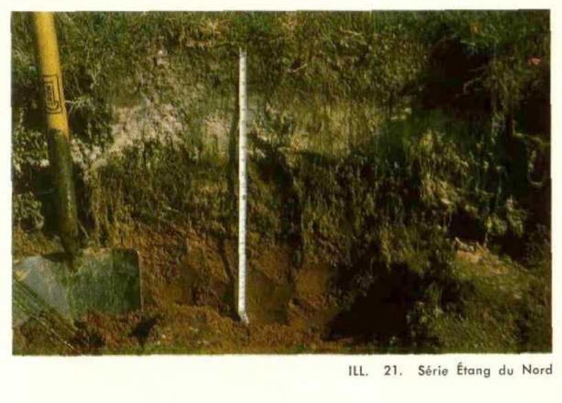
ILL. 21. Série Étang du Nord
Série Corfu (K)
Sous-groupe : podzol concrétionné gleyifié 3.54/8
Dépôt : alluvionnaire
Topographie : plane
Drainage : imparfait à mauvais
La série Corfu se distingue de la série Coffin par son horizon faiblement concrétionné et non cimenté. Aussi le profil se développe aux dépens de dépôt alluvionnaire parfois éolisé provenant de la formation Cap-aux-Meules. Les séries Corfu et Étang du Nord ont des caractères communs.
Matière organique mésotrophe; structure feuilletée à spongieuse dans sa partie inférieure; gris très foncé (5YR 3/1); très fortement acide.
Aej
3.5 - 4.5
Sable limoneux particulaire; meuble; gris rose (5YR 6/2); très fortement acide.
Bf
4.5 - 16
Loam à loam argileux; structure en agrégats fins; friable; perméable; rouge (2.5YR 4/8), rouge faible à sec (10R 5/4); fortement acide.
C
16
Argile massive légèrement collante si humide, cimentée à l'état sec; rouge foncé (10R 3/6) et rouge pâle à sec (10R 5/3); faiblement acide en profondeur sur matériau calcaire.
Loam à loam argileux; structure en agrégats fins; friable; perméable; rouge (2.5YR 4/8), rouge faible à sec (10R 5/4); fortement acide.
C
15
Argile à argile limoneuse; particulaire; massive; collante si humide, se cimente à sec; rouge faible (10R 5/3); faiblement acide en profondeur sur matériau calcaire.
SOLOMON
Résultats analytiques
Horizons
Profondeur en pouces
Sable %
Limon %
Argile %
pH
C %
N %
Cations échangeables M.E./100g
Bases totales
C.E.
Saturation %
Ca
Mg
K
H+
Aa
0 - 7
28.0
44.0
28.0
4.5
4.31
0.26
2.7
2.8
0.2
18.0
5.7
23.7
24.0
Bf
7 - 15
30.0
34.0
36.0
4.9
1.53
0.11
1.0
2.5
0.1
18.0
3.6
21.6
16.6
C
15
24.0
30.0
46.0
5.0
0.88
0.05
2.5
3.8
0.2
4.0
6.5
10.5
61.9
Utilisation agricole
Les sols de la série Solomon jouissent d'un bon drainage tandis que la texture et la structure leur confèrent un bon pouvoir de rétention. De bonnes applications d'amendements basiques amélioreraient le pH. Ils conviennent très bien aux pâturages et à la grande culture malgré une topographie accidentée.
ILL. 24. — Le loam argileux Belle-Anse au contact du loam sableux Vigneault fortement podzolisé.
Les loams argileux Belle-Anse sont des alluvions récentes riches en matière organique (illustration 24) sédimentées dans les eaux de lagunes étroites qui s'enfonçaient à l'intérieur des îles. Ils sont très peu évolués. Aussi on les range parmi les régosols.
Profil
Horizons
Profondeur en pouces
Description
Aa
0 - 12
Loam argileux rouge foncé (5YR 3/2) brun à sec (7.5YR 5/2); structure grumeleuse très bien développée; moyennement à faiblement acide.
C
12+
Loam argileux brun rouge foncé (5YR 2/2), gris brun à sec (5YR 5/2); structure grumeleuse; plus friable qu'en Aa; moyennement à faiblement acide.
BELLE-ANSE
Résultats analytiques
Horizons
Profon- deur en pouces
Sable %
Limon %
Argile %
pH
C %
N %
Cations échangeables M.E./100g
Bases totales
C.E.
Satu- ration %
Ca
Mg
K
H+
Aa
0 - 12
31.2
40.0
28.8
5.6
6.90
0.44
20.8
4.4
0.2
12.0
25.4
37.4
67.9
C
12+
31.2
36.0
32.8
5.7
7.40
0.44
20.5
4.2
0.1
10.0
24.8
34.8
71.2
Utilisation agricole
Le loam argileux Belle-Anse possède une structure grumeleuse très bien développée. Le drainage est généralement bon. La capacité d'échange, le pourcentage de saturation et la réaction faiblement acide en surface en font un sol de valeur intrinsèque très bonne. Il convient bien à la plupart des cultures. Cependant, vu l'étendue plutôt restreinte et disposée en bandes étroites, ces sols seraient tout désignés pour l'horticulture.
Série Grand-Ruisseau (R)
Sous-groupe : régosol orthique, 5.11
Dépôt : till argileux
Topographie : ondulée
Drainage : imparfait.
Les sols de cette série issus de matériau argileux calcaire sont très peu évolués. Aussi on les classe dans le groupe des régosols. Ils se présentent tantôt en terrain plat tantôt en pentes complexes. Dans ce dernier cas, l'horizon de surface est souvent absent par suite du phénomène d'érosion très accentué.
ILL. 25. Série Grand-Ruisseau
Profil (illustration 25)
Horizons
Profondeur en pouces
Description
Aa
0 - 7
Loam argileux brun rouge (5YR 4/3) à brun foncé (7.5YR 4/2), brun rouge (5YR 5/3) à sec; structure grumeleuse; très ferme; fortement à moyennement acide.
C
7+
Argile à petits cailloux anguleux gris rouge foncé (10R 4/1), rouge faible (10R 5/3) avec courants verdâtres à sec; gumbo, massif à l'état humide; grossièrement polyédrique et fendille en séchant; faiblement acide à neutre, effervescence au champ à 20 pouces.
GRAND-RUISSEAU
Résultats analytiques
Horizons
Profon-deur en pouces
Sable %
Limon %
Argile %
pH
C %
N %
Cations échangeables M.E./100g
Bases totales
C.E.
Saturation %
Ca
Mg
K
H+
Aa
0-7
24.6
39.8
35.6
5.3
3.81
0.23
5.5
3.8
0.3
5.0
9.6
14.6
65.7
C
7+
20.6
35.8
43.6
6.3
0.47
0.05
3.0
21.0
0.2
1.0
24.2
25.2
96.0
Une étude plus attentive aurait peut-être révélé la présence d'un horizon Bm ou Btj.
Utilisation agricole
La capacité d'échange, le haut pourcentage de saturation et la réaction neutre, même calcaire à faible profondeur, font du loam argileux Grand-Ruisseau un sol intrinsèquement très bon. Toutefois une structure lourde et massive ajoutée à une topographie parfois accidentée invite à les réserver pour la grande culture et les pâturages.
Série Île d'Entrée (En)
Sous-groupe : régosol orthique
Matériau : résiduel et affleurements
Topographie : accidentée
Drainage : bon
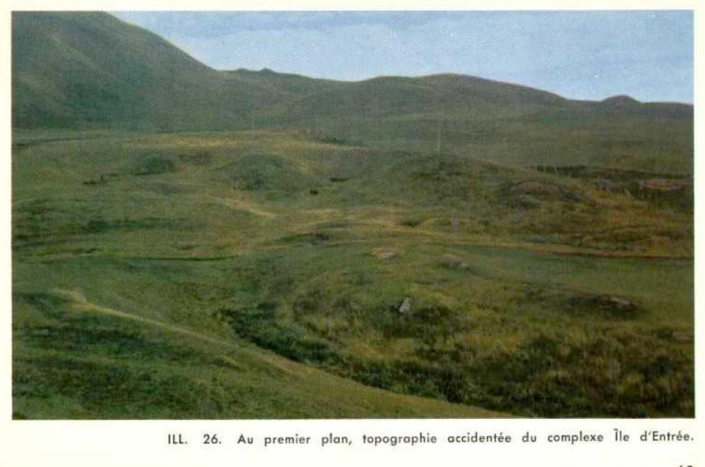
ILL. 26. Au premier plan, topographie accidentée du complexe Île d'Entrée.
C'est avant tout un type de terrain qu'on identifie par la dénomination Île d'Entrée et non une série proprement dite. Ceci réfère à un mince revêtement limono-sableux sur conglomérat de la formation Cap-aux-Meules qui permet de grouper ces sols sous les régosoliques. Localisée à l'Île d'Entrée cette série comprend aussi les affleurements. La topographie est accidentée et complexe comme on le voit dans l'illustration 26.
Série Millerand (Mi)
Sous-groupe : gleysol orthique à gleysol tourbeux (6.22 à 6.21/9) Topographie : pente 2 à 5 % Drainage : mauvais
La série Millerand représente un type de terrain groupant des sols à drainage mauvais reposant sur un horizon C argileux compact à perméabilité très réduite. La surface est tantôt organique et tantôt sableuse comme en fait foi les profils décrits ci-après. Du point de vue génétique ce sont soit un gleysol orthique, soit un gleysol régosolique tourbeux. ...
Sable gris et concrétions rouge foncé; très fortement acide.
Cg
14+
Sable limoneux rouge à brun jaune; particulaire; fortement acide.
Sols organiques
Les sols organiques sont classés en sols oligotrophes et sols eutrophes.
— Sols oligotrophes.
Une tourbière à sphaigne localisée dans l'Île du Havre-Aubert est classée dans ce groupe. Elle est identifiée par la lettre "T" sur la carte.
D'aucun valeur agricole, cette tourbe pourrait servir de litière dans les poulaillers.
Terrains marécageux.
Sous le symbole de terrains marécageux furent groupés les sables d'alluvions marines enrichis de matière organique et continuellement gorgés d'eau du fait qu'on les trouve au niveau de la mer. Ils sont cartographiés à l'Île de l'Est.
— Sols eutrophes.
Les sols eutrophes groupent les terres noires bien décomposées : a) minces sur argile ou sur sable (illustration 29); b) profondes i.e., 2 pieds et plus.
À cause de l'étendue limitée et de leur dispersion dans le territoire étudié, les sols organiques minces n'ont pas été cartographiés séparément.
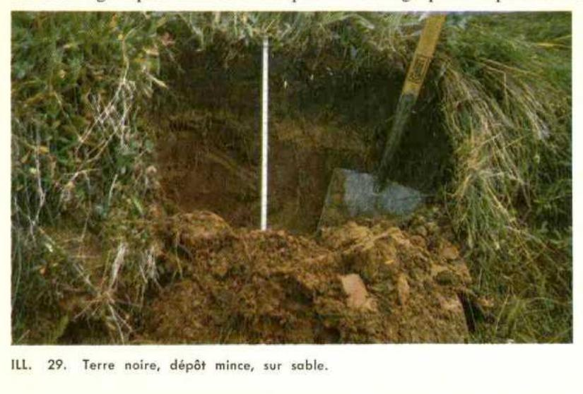
ILL. 29. Terre noire, dépôt mince, sur sable.
Les terres noires profondes sont symbolisées par la lettre “O” figurant sur la carte. Ces circonscriptions incluent aussi des dépôts minces de matière organique eutrophe localisés au contact des dépôts profonds.
Valeur agricole
Moyennant un drainage approprié les sols organiques eutrophes se prêteraient bien à certaines cultures spécialisées.
TERRE NOIRE
Résultats analytiques
Horizons
Profondeur en pouces
Sable %
Limon %
Argile %
pH
C %
N %
Cations échangeables M.E./100g
Bases totales
C.E.
Saturation %
Ca
Mg
K
H+
A
0 - 12
5,9
19,76
0,89
42,2
7,8
0,4
14,0
50,4
64,4
78,2
C
24 - 30
5,9
35,35
1,43
52,0
15,0
0,3
24,0
67,3
91,3
73,7
ANNEXE I
Méthodes analytiques
Les analyses furent effectuées au laboratoire des Sols à la Pocatière, M. Gérard Godbout en est le chef.
Méthodes suivies
A — Analyse physique
a) Gravier et refus : ce qui reste sur tamis à trous ronds de 2 mm.
Carbone organique : méthode de Walkley et Black (Soil Sci., vol. 37, p, 29, 1934).
Azote : méthode Kjeldahl (A.O.A.C. 1950).
pH : potentiomètre Beckman; le rapport sol-eau est 1:1.
Hydrogène échangeable : méthode officielle : extraction à l'acétate de calcium 0.5N (Jour. A.O.A.C., p. 62, Fév. 1952).
Ca, Mg, et K : méthode internationale (Soil Sci, 72 : 6, 1952), extraction à l'acétate d'ammonium neutre et N. Comparaison des couleurs au photocolorimètre.
Pourcentage de saturation :
bases totales x 100
capacité d'échange
ANNEXE II
PLANIMÉTRIE
des
ÎLES-de-la-MADELEINE
Séries de Sol
Symboles
Superficie en acres
Série Anse-à-la-Cabane
C.
492
„ Lavernière
L.
4748
„ Madelinot
M.
1835
„ Aurigny
Ag.
705
„ Vigneault
V.
705
„ Le Bassin
B.
732
„ Brion
Br.
904
„ Grosse-Île
Gi.
519
„ Les Demoiselles
D.
1530
„ Pointe Basse
P.
412
„ Havre-aux-Maisons
Ma.
1716
„ Fatima
F.
2421
„ Coffin
Cf.
4509
„ Gros-Cap
G.
5466
„ Étang du Nord
E.
718
„ Corfu
K.
944
„ Corfu avec revêtement éolien
Kc.
146
„ Boisville
Bf.
253
„ Solomon
S.
1383
„ Belle-Anse
Ba.
545
„ Grand-Ruisseau
R.
1091
„ Île-d'Entrée
En.
173
„ Millerand
Mi.
333
„ Hâvre-Aubert
Ha.
186
Savanes et marécages
918
Tourbes
T
173
Terres noires
O
838
Dunes
Dn
16585
Superficie totale:
50980
Annexe III : Données planimétriques tirées de la carte des possibilités d'utilisation agricole des Îles-de-la-Madeleine.
Superficie en acres des différentes catégories de sols.
Localités
Zone agricole (22,519 a.)
Zone non agricole (25,492)
Sols organiques (884)
Total
Sols à culture (12,559)
Sols à pâturages (4,543)
Sols à cultures spéciales (5,417)
Très bons
bons
moyens
Île d'Entrée
88
164
24
574
186
1,036
Hâvre-Aubert
24
632
318
598
2,302
304
4,178
Le Bassin
562
1,940
308
967
880
3,807
280
8,744
Lavernière
116
2,036
314
496
1,086
2,476
24
6,548
Fatima
258
1,192
300
768
992
3,245
200
6,955
Cap-aux-Meules
506
82
144
76
808
Hâvre-aux-Maisons
16
1,446
520
606
936
3,310
6,834
Pointe-aux-Loups
125
125
1,600
1,850
Grosse-Île
266
186
16
1,552
2,020
Île de l'Est
8
132
8
188
4,644
4,980
Grande Entrée
100
300
700
596
1,578
3,274
Île Brion
864
156
648
1,668
TOTAL
1,064
9,279
2,216
4,543
5,417
25,492
884
48,895
BIBLIOGRAPHIE
ALCOCK, F. J. 1941. The Magdalen Islands. Their geology and mineral deposits. Transactions, Vol. XLIV, pp. 623-649, Ottawa.
BARIL, R. et ROCHEFORT, B. 1965. Étude pédologique du comté de Kamouraska. Réaction au pH des sols, p. 133, tab. 24. Ottawa.
B.A.E.Q. 1966. Esquisse du plan. Les Îles-de-la-Madeleine. Tome 2, p. 107.
GRANDTNER, M. 1964. Aperçu de la végétation des Îles-de-la-Madeleine. Communiqué présenté au 32e Congrès de l'ACFAS.
HUBERT, P. Les Îles-de-la-Madeleine. Notes historiques.
MAILLOUX, A., DUBÉ, A. et TARDIF, L. 1964. Classement des sols selon leurs possibilités d'utilisation agricole. Cahiers de géographie de Québec, vol. VIII, no. 16.
N.S.S.C. 1963. Report on the Fifth Meeting of the National Soil Survey Committee of Canada. Held at Winnipeg, Manitoba.
ROUSSEAU, L. 1964. Carte pédologique des Îles-de-la-Madeleine, B.A.E.Q., Mont-Joli, (manuscrit).
SANSCHAGRIN, R. 1964. Les Îles-de-la-Madeleine. Rapport géologique 106, Ministère des Richesses Naturelles, Québec.
SCOTT, A. 1957. Notes de cours mimiografiées. Faculté d'Agriculture, La Pocatière.
TARDIF, L. 1964. Étude des sols de la paroisse de Saint-Charles-de-Caplan, comté Bonaventure. Thèse de maîtrise, Faculté d'Agriculture, Université Laval, Qué.
TARDIF, L. 1964. Cartes de possibilités d'utilisation des sols des Îles-de-la-Madeleine, B.A.E.Q., Mont-Joli, Québec.